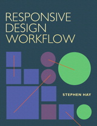

Progressive Design Process
Jake Rayson
Freelance front end designer
Freelance front end designer
responsive design changes everything
your entire way of working will probably have to change
Jeremy Keith (again), internet luminary (still)
encourages rapid and flexible response to change
A bit like the web…
we are doing the wrong things efficiently all the time
Eric Ries, author The Lean Startup
Client/Agency Engagement is F*cked,
Waterfall UX Design is a Symptom
Leisa Reichelt, Head of User Research, Government Digital Service
Chunks, not blobs
Karen McGrane, author Content Strategy for Mobile
We’re not designing pages, we’re designing systems of components.
Stephen Hay, via Brad Frost, on Atomic Design
Start with the small screen first, then expand until it looks like shit.
Time to insert a breakpoint!
Pattern Lab is a collection of tools to help create and maintain atomic web design systems.
Brad Frost, creator of the awesome Pattern Lab
Aaron Gustafon’s famous Progressive Enhancment M&M:
Jake Rayson